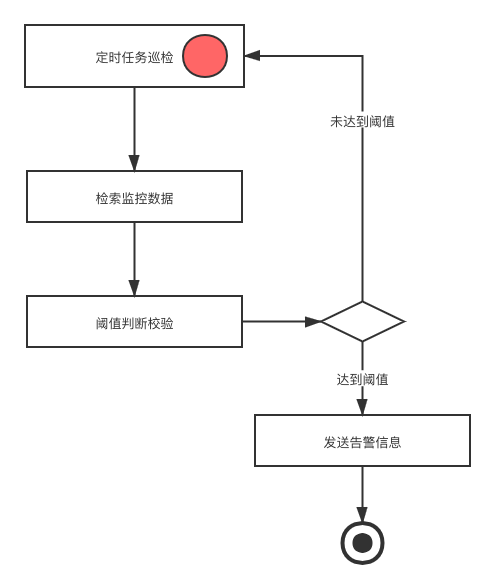

- 01 搭建学习环境准备篇.md.html
- 02 RocketMQ 核心概念扫盲篇.md.html
- 03 消息发送 API 详解与版本变迁说明.md.html
- 04 结合实际应用场景谈消息发送.md.html
- 05 消息发送核心参数与工作原理详解.md.html
- 06 消息发送常见错误与解决方案.md.html
- 07 事务消息使用及方案选型思考.md.html
- 08 消息消费 API 与版本变迁说明.md.html
- 09 DefaultMQPushConsumer 核心参数与工作原理.md.html
- 10 DefaultMQPushConsumer 使用示例与注意事项.md.html
- 11 DefaultLitePullConsumer 核心参数与实战.md.html
- 12 结合实际场景再聊 DefaultLitePullConsumer 的使用.md.html
- 13 结合实际场景顺序消费、消息过滤实战.md.html
- 14 消息消费积压问题排查实战.md.html
- 15 RocketMQ 常用命令实战.md.html
- 16 RocketMQ 集群性能摸高.md.html
- 17 RocketMQ 集群性能调优.md.html
- 18 RocketMQ 集群平滑运维.md.html
- 19 RocketMQ 集群监控（一）.md.html
- 20 RocketMQ 集群监控（二）.md.html
- 21 RocketMQ 集群告警.md.html
- 22 RocketMQ 集群踩坑记.md.html
- 23 消息轨迹、ACL 与多副本搭建.md.html
- 24 RocketMQ-Console 常用页面指标获取逻辑.md.html
- 25 RocketMQ Nameserver 背后的设计理念.md.html
- 26 Java 并发编程实战.md.html
- 27 从 RocketMQ 学基于文件的编程模式（一）.md.html
- 28 从 RocketMQ 学基于文件的编程模式（二）.md.html
- 29 从 RocketMQ 学 Netty 网络编程技巧.md.html
- 30 RocketMQ 学习方法之我见.md.html
- 捐赠
21 RocketMQ 集群告警
前言
对集群健康状况、使用主题、消费组资源的巡检，发现达到阈值则发送告警信息给管理员或者资源申请者。监控是告警的基础，告警的巡检基于前面两篇文章中监控采集到的数据。
告警的重要性不必过多地赘述，RocketMQ 集群往往承载着公司核心业务流转。如果集群不可用往往影响是全公司的业务，事故责任是公司最高级别的。
本文从告警项的设计、告警流程、告警实战给出指导建议，在实践中以此为思路扩展完善，实现自己公司的定制化告警。
告警项设计
下图分别从主题、消费组、集群维度罗列了比较重要的告警项以及触发条件包括哪些方面。

触发条件
- 触发阈值：超过某个特定的数值，例如：消费积压超过 10 万。
- 时间间隔：间隔多久检测，例如：5 分钟内消费积压超过 10 万。
- 触发次数：在时间间隔内满足阈值的次数，例如：5 分钟内消费积压超过 10 万，触发了 3 次。
- 告警时间段：收到告警通知的时间范围，例如：在 9:00-22:00 之间收到告警信息。
主题告警
发送速度：当发送速度满足触发条件设定的阈值时发送告警信息。
例如：5 分钟内当发送速度小于阈值 10，触发 1 次，在 00:00-23:59 触发告警信息。
消费告警
消费速度：当消费速度满足触发条件设定的阈值时发送告警信息。
例如：5 分钟内当消费速度小于阈值 5000，触发 1 次，在 00:00-23:59 触发告警信息。
消费积压：当消费积压值满足触发条件设定的阈值时发送告警信息。
例如：5 分钟内当消费积压大于阈值 100000，触发 1 次，在 00:00-23:59 触发告警信息。
集群告警
集群节点数量：当集群节点数量满足触发条件设定的阈值时触发告警。
例如：5 分钟内当集群节点数量小于阈值 4，触发 1 次，在 00:00-23:59 触发告警信息。
集群响应时间：当集群节点发送的 RT 满足触发条件的阈值时触发告警。
例如：5 分钟内当节点发送的响应时间大于 1 秒，触发 1 次，在 00:00-23:59 触发告警信息。
集群写入 TPS：当集群写入 TPS 满足触发条件设定的阈值时触发告警。
例如：5 分钟内当集群写入 TPS 大于 40000，触发 1 次，在 00:00-23:59 触发告警信息。
集群节点可用性：当集群节点心跳检测结果满足触发条件设定的阈值时触发告警。
例如：5 分钟内当节点心跳检测结果大于 0（表示失败），触发 1 次，在 00:00-23:59 触发告警信息。
集群写入变化率：当集群写入 TPS 变化率满足触发条件设定的阈值时触发告警。
例如：5 分钟内当集群写入变化率大于 100%，触发 1 次，在 00:00-23:59 触发告警信息。
告警开发实战
告警流程
定时任务巡检：可以使用公司的调度平台或者自己写调度线程 ScheduledExecutorService，调度的频率可以根据不同的指标分成不同的调度任务，例如：集群告警可以采取秒级探测、对于主题和消费组的告警可以采用分钟级探测。
检索监控数据：数据来自于前面两节中存储的监控数据，例如：存储到了时序数据库 InfluxDB 中。
发送告警信息：此处可以发送到公司的统一告警系统，也可以发送到钉钉、邮箱、短信等。

主题/消费动态 SQL
我们可以通过在界面上配置不同的告警规则生成不同的检索语句，在定时调度时使用生成的语句。

通过类似上面图示中对主题和消费组的选择，动态生成 SQL 语句，例如：当选择以下动态规则参数时，集群名称 demo_cluster、消费组名称 demo_consumer、类型 consumer、指标积压、大于、阈值 1000000、间隔 5 分钟、次数 1 次、告警开始时间 00:00、告警结束时间 23:59 时生成以下语句。
select Count(value) FROM "consumer_monitor_info" WHERE "clusterName" =
© 2019 - 2023 Liangliang Lee. Powered by gin and hexo-theme-book.